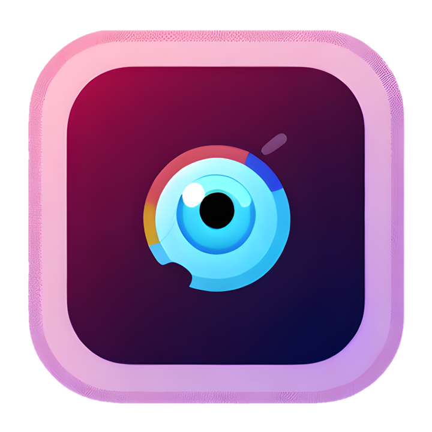

<!DOCTYPE html>
<html lang="pt-br"></html>
<html>

<head>
	<title>Correx - Mariana Fernandes</title>

	<meta charset="utf-8">
	<meta name="viewport" content="width=device-width, initial-scale=1.0">
	<link rel="stylesheet" href="css/style.css">
	<link rel="preconnect" href="https://fonts.googleapis.com">
	<link rel="preconnect" href="https://fonts.gstatic.com" crossorigin>
	<link href="https://fonts.googleapis.com/css2?family=Montserrat:wght@100;300;400&display=swap" rel="stylesheet">
</head>


<body>
	<div id="cabeca" class="cabeca">
		<ul>
			<li><a href="index.html">Home</a></li>
			<li><a href="portfolio.html">Portfólio</a></li>
			<li><a href="curriculo.html">Curriculo</a></li>
			<li><a href="contato.html">Contato</a></li>
			<li id="threeline-icon" class="threeline-icon" onclick="openNav()">&#9776;</li>
		</ul>
	</div>
	<div class="main">

		<ul class="caminho">
			<li><a href="index.html">Home</a></li>
			<li>></li>
			<li><a href="portfolio.html">Portfólio</a></li>
			<li>></li>
			<li>DD</li>
		</ul>
		<h1>DD - Defying Disability	</h1>
		<div class="imgprojeto">
			
		</div>
		<div class="description">
			<h2>Descrição do Projeto</h2>
			<p>Projeto desenvolvido como trabalho de graduação do curso de Tecnólogo em Análise e Desensolvimento de Sistemas da FATEC,
			   consiste em uma aplicação voltada aos deficientes visuais, onde por meio de tecnologia assistiva, auxiliará o usuário a identificar cores.
			   Devido o DD se tratar de uma aplicação sem fins lucrativos, o mesmo gerará renda por meio de contratos de parceria.
			</p>
			<h2>Palavras chave</h2>
			<p>Tecnologia assistiva / Deficientes visuais / Acessibilidade </p>
		</div>
</body>

</html>